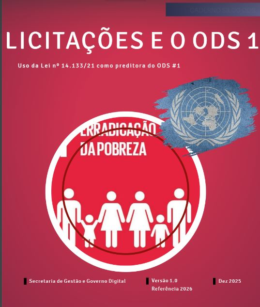
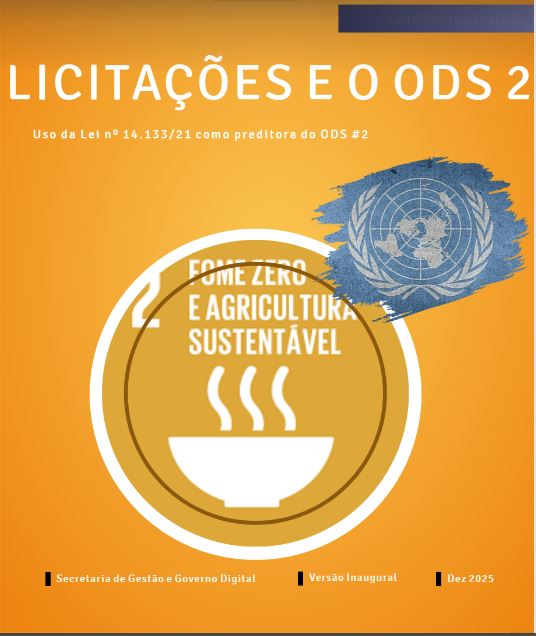
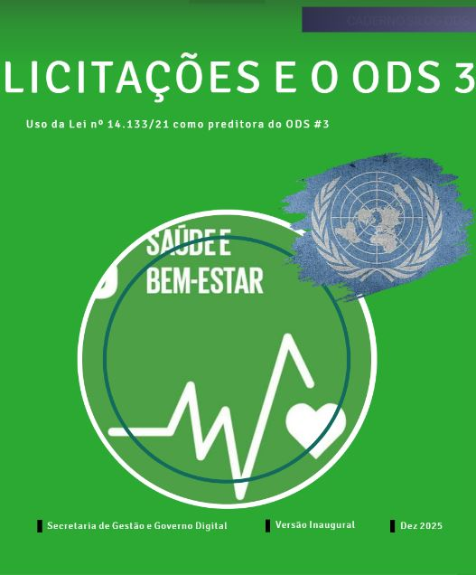
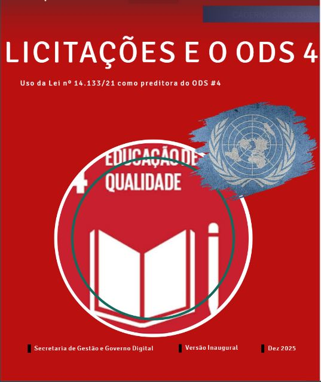

ODS 1
Versão 1.0 · Referência 2026
Erradicação da pobreza
Uso da Lei nº 14.133/2021 como instrumento para apoiar ações relacionadas ao primeiro Objetivo de Desenvolvimento Sustentável.
Ler no visualizador oficialBiblioteca técnica
Orientações para transformar os Objetivos de Desenvolvimento Sustentável em decisões práticas no planejamento e na gestão das contratações públicas.




Coleção disponível
Os materiais abrem no leitor digital mantido pela fonte oficial.
Uso da Lei nº 14.133/2021 como instrumento para apoiar ações relacionadas ao primeiro Objetivo de Desenvolvimento Sustentável.
Ler no visualizador oficialReferências para relacionar o planejamento das compras públicas à segurança alimentar e à promoção de sistemas alimentares sustentáveis.
Ler no visualizador oficialOrientações para considerar saúde, proteção das pessoas e bem-estar na definição de requisitos e resultados das contratações.
Ler no visualizador oficialDiretrizes para aproximar as contratações públicas de ambientes educacionais inclusivos, acessíveis, seguros e sustentáveis.
Ler no visualizador oficialAplicação prática
A coleção apoia equipes públicas na formulação da demanda, na definição do objeto, na modelagem contratual e na avaliação dos resultados esperados.